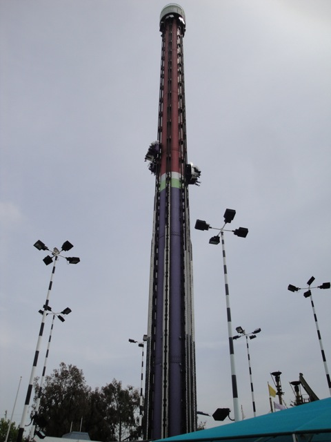
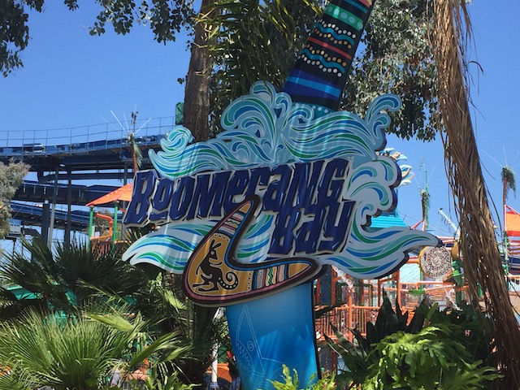
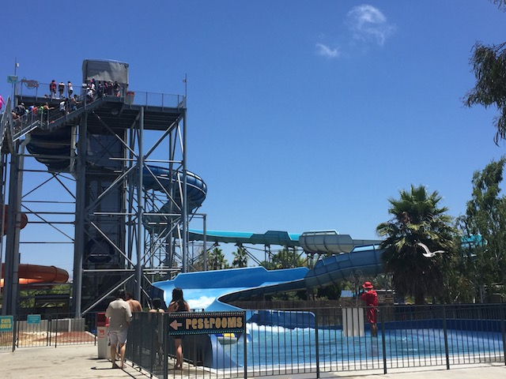

California's Great America is a nice park to go to. Sure, it's not a park with a bunch of rollercoasters with some of them kicking ass like Cedar Point and Six Flags Magic Mountain. And there is not incredible theming like at a Disney Park. But it does seem to have a quaint little charm to the place. And the park has been adding better coasters over the years. Granted, there have been a few scares with the park thanks to that stupid stadium from the 49ers as well as more bitching from its corporate neighbors *groan*. But luckily that got resolved. And since Cedar Fair bought it, they added Gold Striker, which is a GREAT GCI, and Railblazer (RMC Raptors are amazing. Please build more of them). California's Great America is still a very fun park in Northern California and I am looking foreward to returning to it.
Here are the reviews of all the Flat Rides at California's Great America. California's Great America has a very good flat ride collection with plenty of flat rides spread out throughout the park. Their best flat ride, without a doubt would have to be Drop Zone. Drop Zone is an Intamin 2nd Generation Freefall. It is a very fine drop tower. Another flat ride that I rode there would be Tiki Twirl. Tiki Twirl is a Disk-O with a hump in the middle. It is a very fun ride. The traditional Disko seating makes it a much better ride. The frisbee they have here is also quite good. It spun really well, had some nice height, and was LIGHTYEARS better than La Revolution at Knotts Berry Farm. But then again, what Frisbee ISN'T Lightyears better than La Revolution at Knotts. They also have Orbit, which is an enterprise that surprisingly ran a really good program. They also have some Flyers here. While they were fun, they are also on the weak side compared to other flyers I've ridden. They also have a breakdance in Planet Snoopy that I rode. And unfortunetly, it sucked. The spinning was really random and not very strong at all. And then there's Endeavor. Oh, how I HATE that ride. Endeavor is basically a Looping Starship. And as you know, those are some of the worst rides ever. Aside from having a sh*tty program and only going upsidedown once, I managed to spare my balls on this ride by leaning foreward into the restraint, giving them some room. But did that stop the pain? NO!!! It just made my god damn chest hurt. That completes the flat rides that I rode when I went to California's Great America. They also have a spinning teacup style ride, some chairswings, a double decker carousel, a skyride, and a bunch of kiddy flats in Planet Snoopy.

Here is Drop Zone. The 2nd Generation Freefall and Star Flat Ride.
Water Rides
While I never rode any water rides at California's Great America, I can tell you what I saw. I saw a log flume that looked pretty cool. There was a rapids ride, a shoot the chutes. And yeah, that's all I know of Great America's Water Rides.
Water Park
(Boomerang Bay)
Here is a brief review of the water park that is included with admission to California's Great America. Boomerang Bay. It's an extremely small water park, and almost all of the water slides seemed very standard. But honestly, for what it was, it seemed like a fun little water park. I just barely scratched the surface with this park, but it seems like a fun place to spend a couple hours. Yeah, it's mostly concrete and the slides are pretty standard, but there's a little bit of Aussie humor in what little theming they do have for Boomerang Bay, and the slides do look fun.

The Major Waterslides
There is a link to a review of all the Major Waterslides at Boomerang Bay.
Unfortunetly, Down Under Thunder was the only water slide I did at Boomerang Bay. I just didn't have the time to do any of the other water slides. And from what I could tell, none of the other slides seemed especially that intersting. They had a family raft ride, a standard tube slide, and a small mini-drop slide. Who knows. Maybe that was a lot of fun. All I know is that I hope to come back and do more of the water park on my next visit to the park.

Are there any fat people I can ride this with?
Dining
Most of the food that I saw at California's Grat America was Typical Amusement Park Crap. In 2006, remember that I got a hot dog there. It tasted pretty good. And in 2010, they served chicken. However, it was annoying to eat due to the fact that you couldn't cut it since it was so boney and you had to eat it like a caveman would. But yeah, food here is nothing special whatsoever.
Theming and Other Attractions
Here are the reviews of all the other stuff at California's Great America. Well, there's not much theming at California's Great America other than the old Marriot Entrance. But the buildings and setting do bring a sense of charm to the park. And as for other attractions, I'm sure the park has some shows or something, but I really don't know of anything special to do at the park.
In Conclusion
California's Great America is a nice park to visit. While nothing at the park is outstanding, the park does have some intense roller coasters like Railblazer and Gold Striker, as well as some other fun rides. It also has a little bit of charm. I definetly enjoyed my last visit and I'll be back soon for more of this nice park.
Enthusiast FAQs.
*Are there kiddy coaster restrictions? - No and Yes. Woodstock Express has no restrictions, but Lucys Crabbie Cabbies (which I didn't ride, and didn't review) requires you to be accompinied by a child to ride.
Tips
*Run to Railblazer when you first get there as thats tnot only the best ride, but the capacity is not very good.